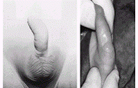
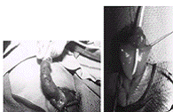

- Urethral diverticulum
- In the more common wide-mouthed form, usually located in the region of the penoscrotal junction, the distal lip may give rise to a form of valvular obstruction as the diverticulum undergoes progressive distension.
- Presentation is either with obstructive symptoms or with postmicturition dribbling.
- The rarer saccular lesions have a narrow neck and may occur anywhere along the length of the penile urethra, including in the fossa navicularis.
- Presentation is with urinary infection – rarely associated with stone formation within the diverticulum.
- Treatment is by endoscopic incision or resection of the obstructing lip or, rarely, by a perineal approach for the excision of a large diverticulum.
C. Megalourethra
Is a rare congenital anomaly characterized by abnormal dilatation of the penile urethra in the absence of any evident obstruction. It may be associated with lack of corpus spongiosum or with complete absence of the corpora cavernosa. In such cases the penis amounts to little more than a floppy sac comprised of skin externally and urethral mucosa internally.
It shares some of the characteristics of a urethral diverticulum but includes more extensive and uniform involvement of the urethra.
The classification of fusiform and scaphoid types reflects the severity of the defect and the resultant effect on the corpus spongiosum and corpora cavernosum.
- The scaphoid form results from deficiency or absence of the ventral corpora spongiosum.
- A fusiform megalourethra also affects the dorsal sponge and corpora cavernosa.
- More recently, Adamson and Burge have described a third type with all corpora intact.
The cause of megalourethra remains somewhat controversial.
- Stephens postulated that a delay in cannulization of the distal epithelial core might lead to obstruction and proximal dilation.
- Others have suggested that embryologic arrest of the mesoderm investing the urethral folds influences the development of the corpora and erectile tissue.
Megalourethra is often associated not only with other urorectal anomalies such as imperforate anus, prune-belly syndrome, and urethral valves, but also with varying degrees of uropathy.
Diagnosis is often suspected on physical examination, particularly if the child is seen to void. The urethral meatus may be normally placed but pathologic.
- The rare and more severe fusiform type is often characterized by a soft, elongated phallus with palpably inadequate corpora.
- Ventral ballooning with voiding is typical of scaphoid megalourethra.
- Voiding cystourethrography and renal ultrasonography are performed to establish the diagnosis and evaluate the upper tracts.
Treatment centers on reconstruction of the urethra and corpora spongiosum using common principles of hypospadias repair. The scaphoid urethra can be opened longitudinally using the better dorsal and lateral tissue.
- The fusiform variety presents a much more difficult challenge depending on the amount of corporal tissue present. Some may be impossible to completely repair from a functional standpoint and benefit from corporal reconstruction with placement of penile prostheses as adults.
- Uropathy remains a significant problem.

- Abnormalities of cowper's glands and ducts
Cowper's glands are paired structures found along the posterolateral aspect of the proximal urethra, located on either side of the urethra. The main glands lie within the urogenital diaphragm, and accessory glands are located more distally along the bulbous urethra. Each gland is drained by a duct that courses medially and posteriorly through the corpus spongiosum to empty side-by-side in the bulbar urethra.
Cowper’s gland cysts (syringocoeles)
- Cysts, possibly developing due to obstruction of the orifices, may be seen as a filling defect along the floor of the bulbar urethra.
- Distension of the ducts, or of the glands themselves, may cause urethral compression or, if the anterior wall of the cyst ruptures into the urethra, may result in an obstructive membrane, in a diverticular structure in that area or retrograde filling of a prominent duct.
- Usually these abnormalities are asymptomatic, but they may cause terminal hematuria, bloody spotting at the meatus, postvoid dribbling, or obstructive symptoms.
- Most Cowper's duct anomalies are discovered as minor findings on voiding cystourethrography done for urinary tract infection.
- Surgical treatment is reserved for those patients who are symptomatic.
- Transurethral unroofing of a cyst typically is adequate, although one should take care not to leave a distal obstructing lip, which may act as a valve.
- Open resection by a perineal approach has been occasionally performed for a massively enlarged cyst producing obstruction.
- Urethral atresia and agenesis
Urethral atresia and agenesis must be included in the differential diagnosis of renal anomalies and bilateral hydronephrosis diagnosed in utero. Unfortunately, unless there is some other egress for the urine to escape the bladder, such as a patent urachus or an urorectal communication, these lesions are not compatible with renal development.
Management will depend on the specific anomaly and the amount of renal function salvaged by alternative urinary drainage.
- An association between urethral atresia and prune-belly syndrome in females has been recognized, but few reports discuss the outcome of treatment in these gravely ill infants. Most of these children will come to renal transplant due to severe renal damage that occurred in the neonatal period.
- In males, progressive catheter dilation has been used with reasonable success and would be similarly affective in males.
- Urethral duplications
Another rare set of urethral anomalies is duplication.